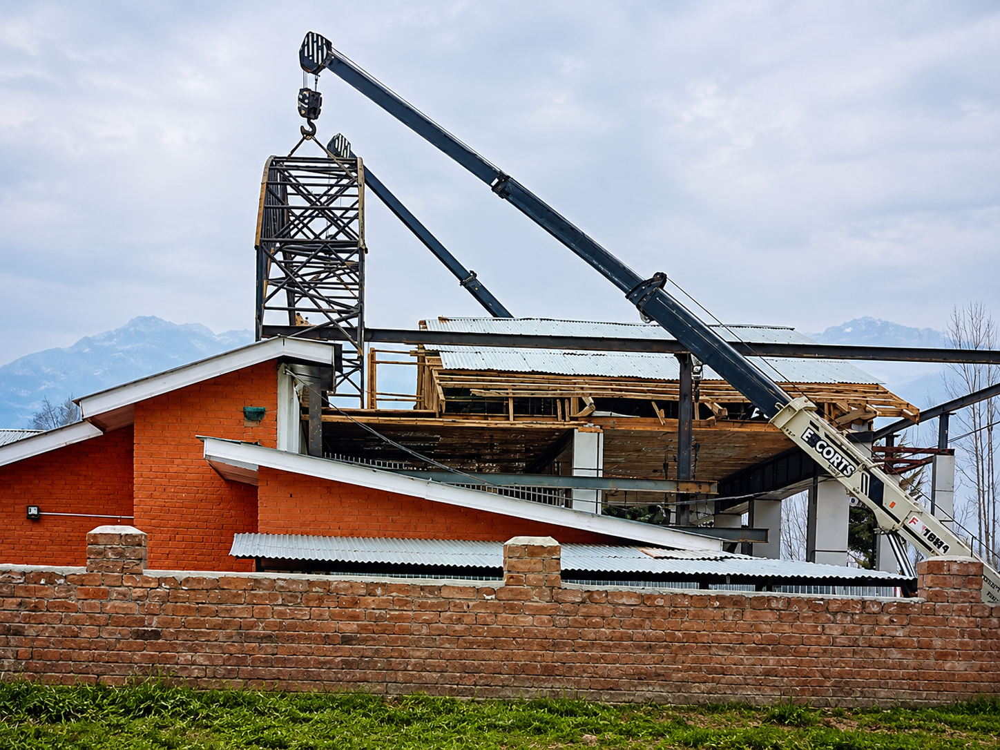
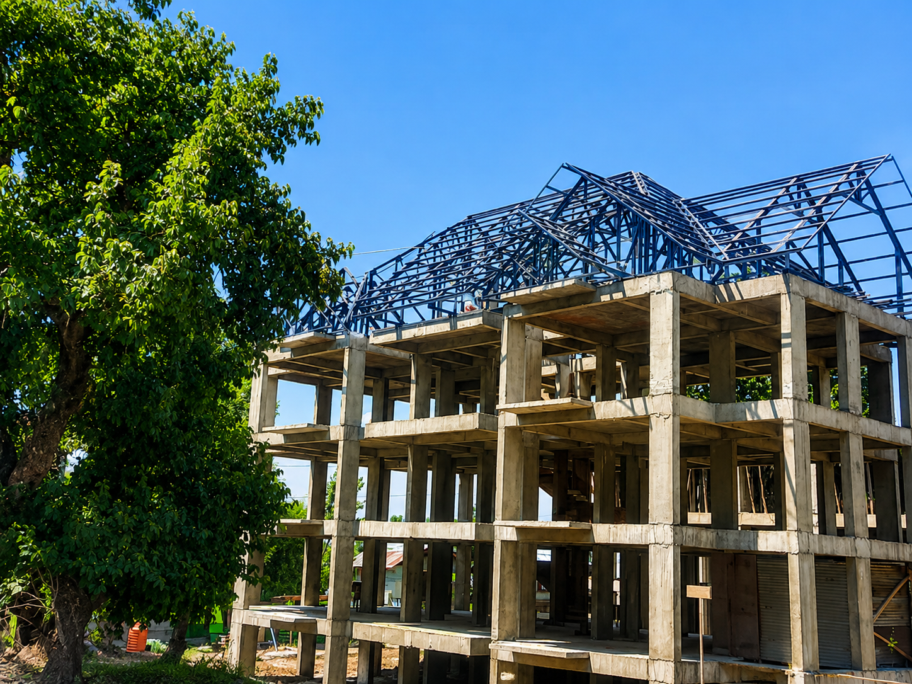
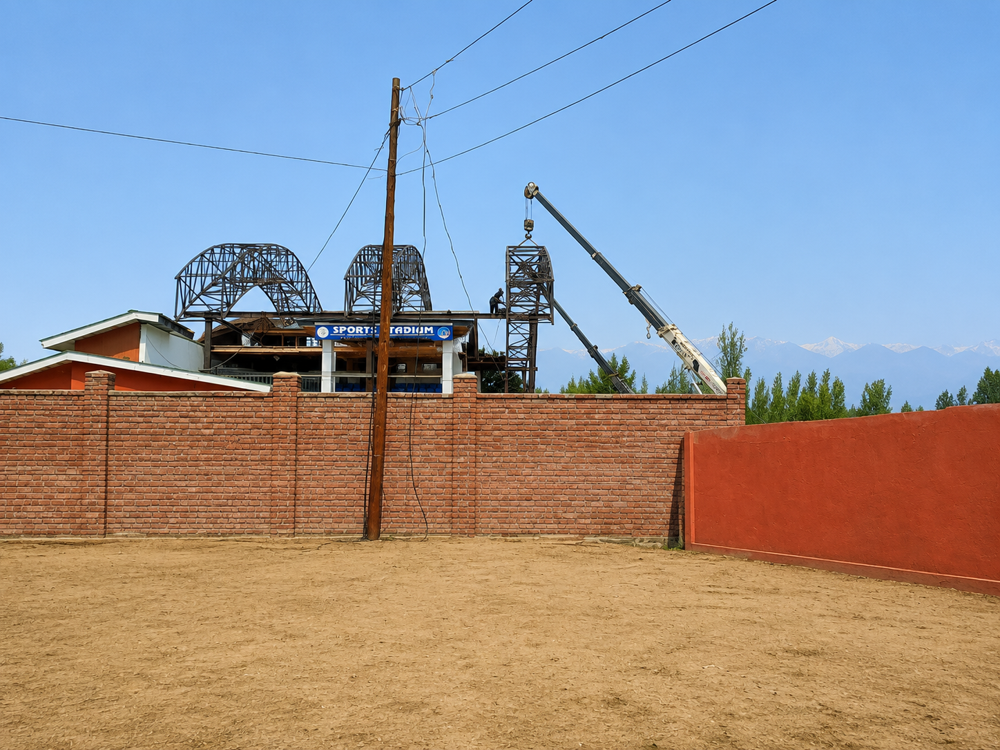
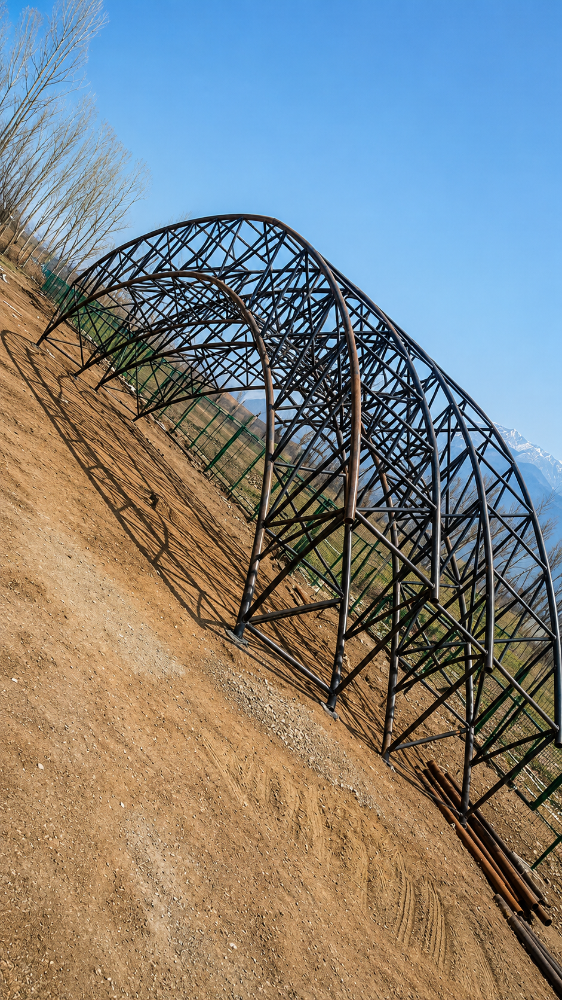
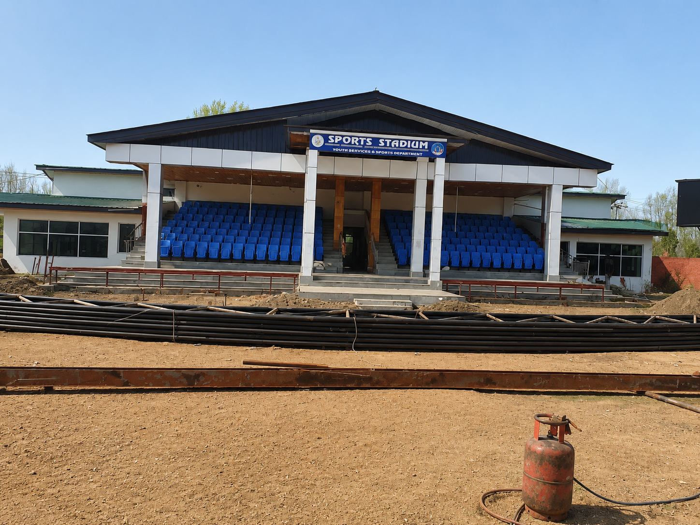
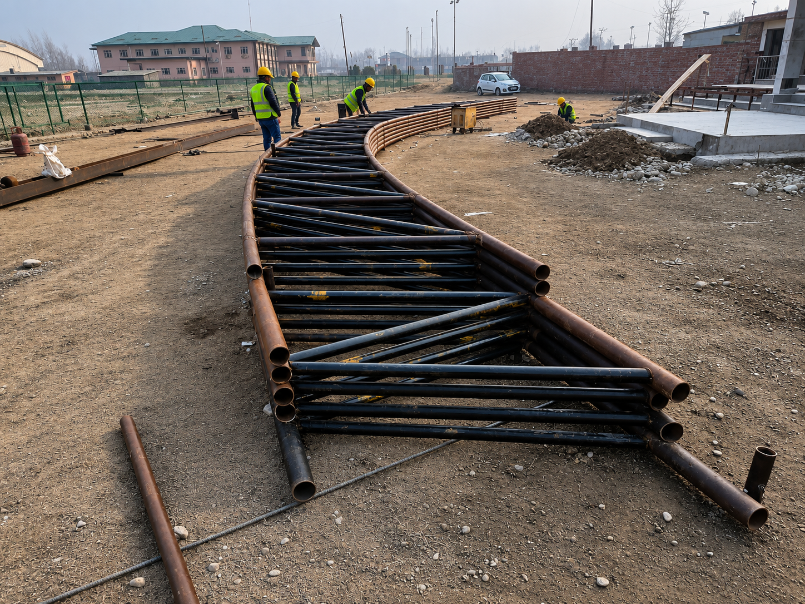
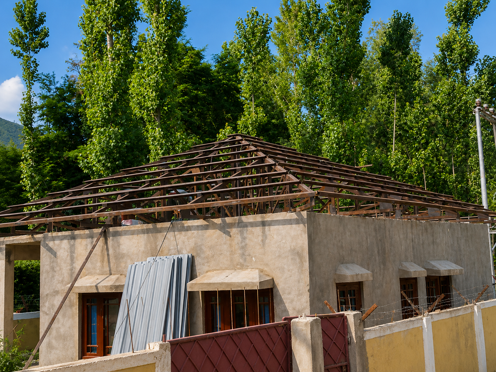
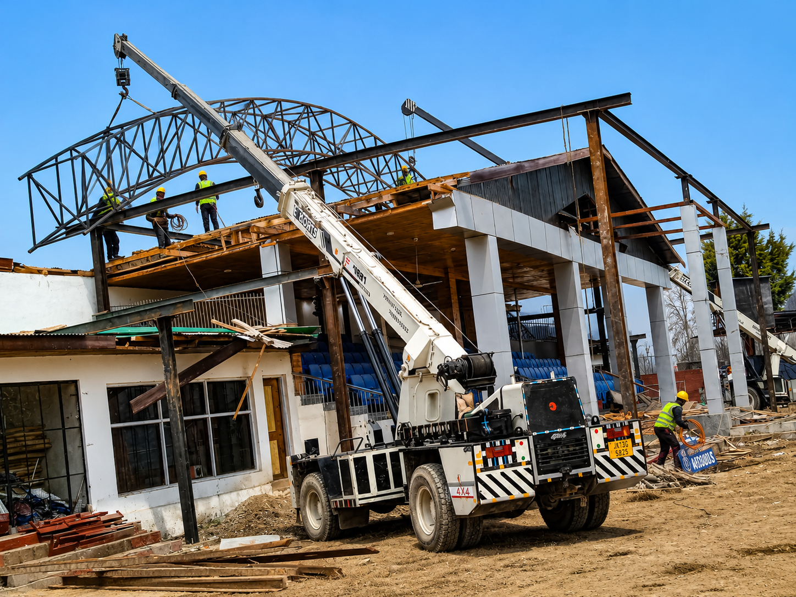
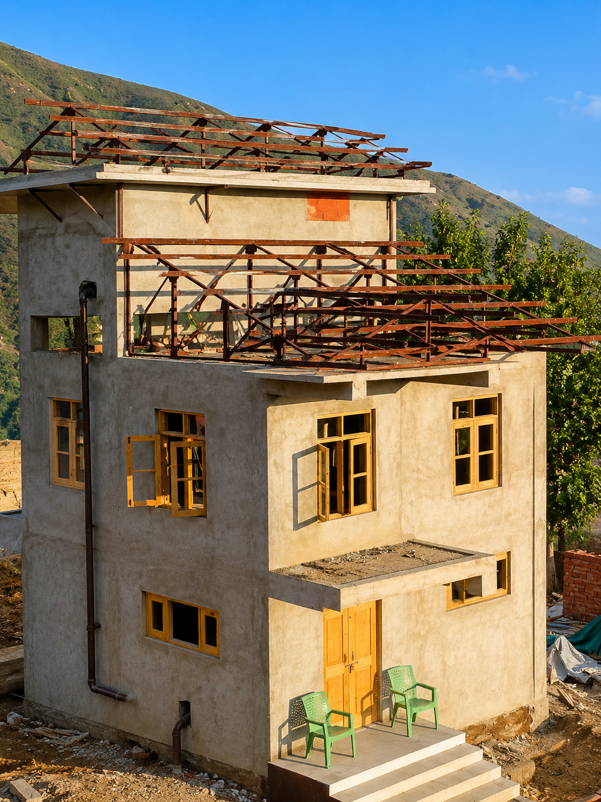

ROOF TRUSS · PROJECT GALLERY
Spans with
strength.
Custom roof trusses and structural roofing systems fabricated for performance, precision and lasting use.

PROJECT OVERVIEW
Engineered to cover more.
Our roof truss work covers residential, commercial and institutional structures, including complex curved forms and wide-span roofing systems.
These site photographs document the fabrication, lifting and installation of purpose-built steel roof structures.
10Project photographs
03Roofing applications
100%Custom steel fabrication
ROOF TRUSS · GALLERY








